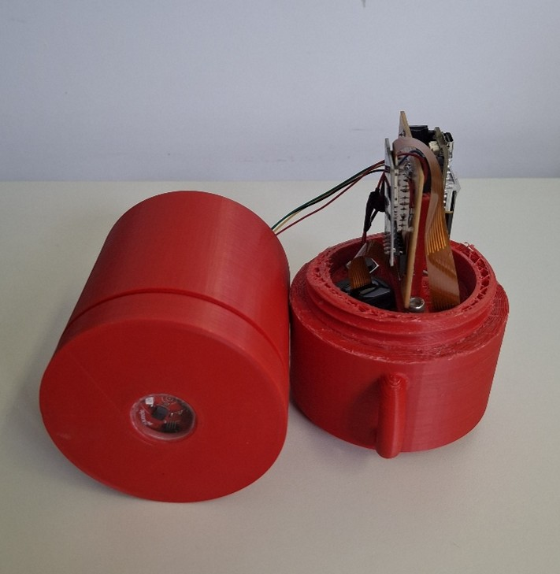

Atualmente, o laboratório conta com quatro projetos de iniciação científica em andamento, todos com vagas disponíveis para estudantes de graduação. Os projetos encontram-se descritos em detalhes aqui. Ressalta-se que as bolsas não estão vinculadas a um projeto específico: a seleção dos candidatos será realizada com base na classificação geral no processo seletivo, independentemente do projeto de interesse indicado durante a inscrição ou a entrevista.
O novo projeto do laboratório, lançado neste ano e atualmente em fase de implementação, também está incluído no material disponível no link acima e encontra-se descrito em maiores detalhes abaixo.
Resultado do processo seletivo Edital 01/2026 - IC-GRAD/IC-JÚNIOR Conheça mais sobre o nosso grupo de pesquisa, click no botão abaixo: Sobre nosso grupo
Aperfeiçoamento de um turbidímetro espectral de baixo custo para monitoramento da qualidade da água

Este projeto busca desenvolver e aperfeiçoar um turbidímetro espectral de baixo custo voltado ao monitoramento em tempo real da qualidade da água em rios, lagos e reservatórios. A turbidez é um importante indicador ambiental, estando associada à presença de sedimentos em suspensão, proliferação de algas, matéria orgânica e outros contaminantes que afetam a qualidade e a dinâmica dos ecossistemas aquáticos.
O projeto: O presente projeto tem como objetivo desenvolver e otimizar um turbidímetro espectral baseado em espectrometria óptica de baixo custo, buscando aliar acessibilidade, confiabilidade e aplicabilidade em monitoramento ambiental contínuo. Além da medição de turbidez, o sistema será avaliado quanto à sua capacidade de diferenciar diferentes componentes presentes na água, ampliando as possibilidades de monitoramento ambiental com sensores acessíveis.
Os experimentos serão realizados inicialmente em ambiente laboratorial, com foco na avaliação da eficiência do dispositivo na detecção de turbidez e na investigação de sua sensibilidade à presença de diferentes componentes opticamente ativos, como algas, sedimentos e matéria orgânica. Os testes serão conduzidos em tanque experimental com diferentes concentrações de turbidez preparadas a partir de soluções de formazina, utilizadas como padrão de referência. Outros parâmetros físico-químicos também poderão ser alterados de forma controlada para análise da resposta espectral do sensor desenvolvido.
Em intervalos regulares, serão realizadas medições utilizando sensores comerciais de referência, permitindo a calibração, validação e análise de desempenho do sistema proposto. Espera-se que o projeto contribua para o desenvolvimento de tecnologias acessíveis voltadas ao monitoramento ambiental e à ampliação das possibilidades de instrumentação de baixo custo aplicadas à limnologia e à gestão de recursos hídricos.
O presente estudo representa uma continuidade e ampliação do trabalho desenvolvido por Marcos Vinicius Lima Dunajski durante seu trabalho de conclusão de curso. O novo protótipo propõe avanços significativos em relação aos módulos anteriormente utilizados em turbidímetros convencionais, incorporando um sistema espectral capaz de identificar diferentes bandas do espectro óptico. Essa abordagem possibilita diferenciar turbidez causada por sedimentos em suspensão daquela associada à proliferação de algas e outros organismos presentes na água.
Pré-requisitos: Graduandos em Engenharia Ambiental, Engenharia Civil ou áreas afins. Interesse em experimentos e testes laboratoriais e em análise e processamento de dados.
Bolsa: Disponível a partir de Agosto, conforme o desempenho e classificação na seleção. Durante a fase inicial, os estudantes selecionados passarão por um período de familiarização com as ferramentas e temas do projeto.
Inscrição:
Os interessados devem enviar, até o dia 15 de junho, um e-mail para rafael.bueno@ufpr.br com o assunto: "IC GRAD – Nome do Candidato". Em anexo, eviar: carta de apresentação (1 página) escrevendo sobre interesse e competências prévias no tema escolhido, currículo atualizado, histórico acadêmico contendo IRA e notas, comprovante de matrícula, disponibilidade de horários, indicação de interesse em participar como voluntário em caso de não contemplação com bolsa, documentação comprobatória para candidatos PIBIC-AF.
Os candidatos pré-selecionados serão convocados para a etapa de entrevista, que será realizada entre os dias 22/06 e 26/06. O resultado será divulgado em edital no dia 27/06.